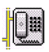

The Amateur Radio Listening Post
Listen to Amateur Radio Repeaters in the
Washington, D.C. Area
30 November
1999: The FM radio band 88-108 has been disabled again. It caused
concern among the Commercial Broadcasting community. Meanwhile,
we have made some progress in the installation of a new receiver.
RealNetworks has donated some of their software so we can remotely control the
server. This will allow us to move the radio to a better site.
Welcome
Welcome to the Amateur Radio
Listening Post. Tune in to UHF and VHF Amateur Radio
Stations in the Washington, D.C. area by controlling an Icom R7000 receiver from this web
site. Click below on the frequency of your choice and listen to live audio from local area
Ham Radio repeaters. This is a purely experimental site and we welcome suggestions and
comments.
News
30 November 1999: The FM radio band 88-108 has been disabled
again. It caused concern among the Commercial Broadcasting community. Meanwhile,
we have made some progress in the installation of a new receiver. RealNetworks
has donated some of their software so we can remotely control the server. This
will allow us to move the radio to a better site.
14 September 1999: The FM radio band 88-108 has been
enabled. The poor antenna means that there is little else to listen
to. In deference to our sponsors, please avoid "shock radio" and
other programs that stretch current social standards.
12 September 1999: The RealAudio Server is hung-up. It
will been restarted in a day or two.
3 August 1999: The old name of this web
server (nihac.info.nih.gov) will
be discontinued. Please use the newer name: speed.nimh.nih.gov. Reception remains poor until
a permanent antenna is installed.
3 August 1999: The RealAudio Server was hung-up. It
has been restarted.
30 June 1999: The site is up and running
on a very limited antenna. Reception will be poor until the permanent antenna is installed.
24 June 1999: We may create an email list for announcing
when the Listening Post is back on the air. You would send an email to the
address and would receive a reply email as soon as the Listening Post is back in
operational. Decisions on this plan will be made early next week.
18 June 1999: The web server, the RealAudio and Speak Freely server,
and the RealAudio encoder are all on line now. The receiver is in place and seems to
be working. However, the antenna feedline is still not installed. I will do
what I can to establish a temporary antenna, but the only thing I can hear is 145.29: our
NIH repeater, which is a very quiet repeater.
17 June 1999: The web server is on line at its new location.
The RealAudio server is on line at its new location. The next step is to install the
RealAudio encoder computer. (This site requires three computers!) Note, even
if all three computers are running, we still do not have the antenna feedline installed
yet.
21 May 1999: The RealAudio encoder is back in service.
20 May 1999: The RealAudio encoder is not working right now. It should be
fixed sometime the week of May 24th. Meanwhile, Speak Freely still works.
Sorry for the problem.
GOING OFF THE AIR *** Update #1***. Current
plans are to shut down operations on June 14, 1999. The web server should come back
on line by June 17, 1999. However, the 225 foot coax cable for the new radio
installation is not yet in place. The Listening Post site will be disabled until the
cable and antenna are installed.
GOING OFF THE AIR. We are planning to move the
Listening Post site sometime in 1999. We will be off the air during this move.
More information to come.
13 April 1999: The "See what others are selecting" function has been broken
since mid February. No one told me! Come on guys, let me know when something is
broken. It's fixed now. The statistics will reflect two months of no data
collection in 1999.
14 January 1999: The ICOM R7000 receiver has been loosing sensitivity over
time. We have replaced this receiver with our backup R7000 and the sensitivity is much
improved. If you have only been hearing noise bursts, or few signals, try again now.
12 December 1998: The Amateur Radio Listening Post is now discussed in a new book by J.
Novak and P. Markiewicz: Web Developer.com Guide to Producing Live Webcasts.
There is a web site associated with this book, and the Listening Post is on the site's hot
list. Check out other live materal at the same web
site.
20 November 1998: Upgraded the server's OS to RedHat
Linux 5.2. There are still a few bugs to work out.
25 September 1998: The FM broadcast band will be kept locked out for now.
8 September 1998: The FM broadcast band has been locked out. FM radio listeners
have been dominating the site, so we are giving other listeners a chance for a few days.
10 August 1998: Try out a very nice HF Web Radio at: http://www.javaradio.com
Options
Java
If your browser supports Java, click on the coffee cup to
use a Java-enhanced version of this web page. (Suports both Real Audio and Speak Freely)
|
RealAudio
(without Java)
You can click on this "real" icon to switch to
the RealAudio version of this web page.
|
Speak
Freely
(without Java)

Click this icon to use the buttons and controls below.
|
See what
others are selecting
Click the radio to see what selections other people are
making. This display updates every 10 seconds. (Your browser must support Java.)
|
Read all
about it
Read this on-line version of the February 1998 QST
Magazine article to learn how to operate this web site.
|
Statistics
To get the latest Listening Post usage
statistics, click on the "Latest Statistics" button. (Note, 1999 data will be
missing 2 months of activity due to a bug.) |
FAQ
Feedback from
users
and
answers
to some common problems |
The ICOM
R7000 and other technical details
Technical Details on how this web
site works |
Satellites?
You can hear satellites with the Listening Post.
|
General Instructions
To use this site, you will need a properly configured sound card
and a copy of either Speak Freely software or the RealAudio™/RealMedia™ player running on your
computer. If you are using a MacIntosh, your only choice is RealAudio™. Users of
Speak Freely should use this page or the Java control panel.
Users of RealAudio™ should switch to the RealAudio™
enabled menu or the Java control panel.
You can either choose a repeater from the list below (a similar list is on the
RealAudio™ enabled menu page), or type in a frequency and set the modulation mode in
the Enter Frequency form below. Note: If you use this page, you must have Speak
Freely running before you choose a frequency, and you must click the
"Disconnect" button at the bottom of the page when you finish. This latter
action will free-up GSM audio services for the next user and keep this server from
clogging your internet connection with unwanted packets!
Enjoy!
2 Meter Repeaters:
220 Repeaters:
Maryland
|
|
|
|
| Bethesda |
|
WB3DIO |
MACS |
Other services:
| Fire Department |
|
Montgomery County |
|
| National Weather Service |
|
KHB36 |
|
| Park Rangers |
|
Skyline Drive |
|
| Dulles Airport |
|
Control Tower |
|
| Washington National Airport |
|
Control Tower |
|
Enter the frequency manually:
Click here to see a
complete list of Washington, D.C. area repeaters.
Please disconnect from this server before you
leave!
Thanks for all the appreciative and encouraging
email!
If you have any comments or suggestions send e-mail to Andrew
Mitz (WA3LTJ) at arm@helix.nih.gov.
Read about FM radio collecting.
Return to the NIH
Radio Amateur Club home page
Last updated 4 December 1999
email to webmaster